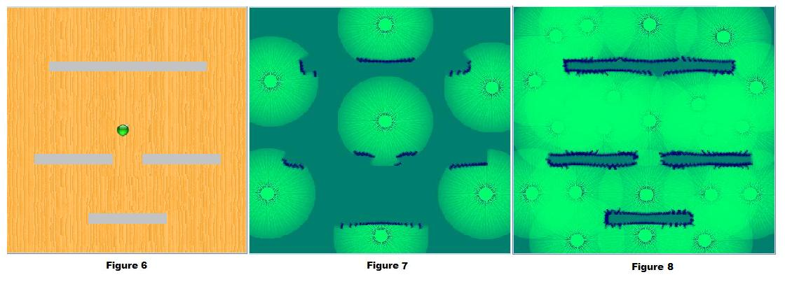

In robotic terminology mapping is the process by which a robot moves around its environment, scans it with its sensors and makes representations of the environment. These representations of the environment made by the robot is called the map.
What are the forms of representing a map?
With range sensors the following representations are possible:
- Raw map of sensor readings: This is a map obtained by simply plotting the range measurements obtained by the sensor with reference to a reference frame. Such a map looks like this
- A grid based map: In a grid based representation each cell in the grid is marked as occupied or unoccupied by an obstacle. Such a representation looks like this
- A feature based map: In this representation the map is shown in terms of geometric primitives such as line segments and corners.
- Topological map: A topological map is in general a higher level representation. It shows a network of topological features such as rooms, corridors and intersections. A typical topological map looks as follows.
Why is mapping important?
Mapping is pivotal for autonomous navigation as well as for robot localization. Through the representations of the environment a robot can plan collision free paths or it could make use of the map to determine its location in the environment.

Herein we describe the mapping algorithm which integrates multiple readings into the probabilistic framework that models the sensor noise or sensor errors. For the sake of keeping this article simple but conveying what it needs to convey we skip steps in the derivation but essentially convey it from an algorithmic standpoint, a standpoint we hope would enable the reader to immediately code the algorithm.
The Mapping Algorithm:
The mapping algorithm works in the following fashion. The map is divided into a rectangular array of cells and initially all cells have a probability of 0.5, indicating that the cell could be occupied or unoccupied to an equal probability, since in the beginning the robot does not know anything about the environment in which it is. A probability value greater than 0.5 indicates the cell has more chances of being occupied than unoccupied by an obstacle. Similarly a probability of less than 0.5 indicates that the cell has lesser probability of being occupied than unoccupied. In figure1 the initial state of the map is shown with all cells shaded in gray green indicating that the state of the cell is unknown regarding its occupancy or non-occupancy. This corresponds to the probability of 0.5 for each cell. Darker shades of gray green indicate probabilities more than 0.5 or higher occupancy and lighter shades indicate probabilities less than 0.5 or higher non-occupancy.

Figure1: Gray green map with 0.5 as the probability and Color shades for different probability values
The starting coordinates of the robot are considered to be (0,0) or the origin or any other point (x,y). This and the cells surrounding it which are occupied by the robot are certainly not occupied by an obstacle and hence they have an occupancy probability of 0 and are depicted in light green. The robot then takes a scan of the environment through its sensors. The scan could be composed of one or multiple range readings, for the sake of simplicity in illustration we consider single reading scans. Since the reading is noisy it is modelled through a probability density function as described in the Virtual Lab for sensor models. One such sonar reading and the probability of the cells which come under the influence of this reading is shown in figure 2.

Figure2: Shows a figure of a ray hitting an obstacle, probability values for the cells which come under the cone updated in terms of color shades.
As seen in figure 2 cells close to the middle ray of the cone and cells near the actual distance reported by the sensor have higher probability values while cells further away from the median ray and those closer to the robot and within the cone have lower probability values. The corresponding color code based depiction of these cells with lighter and darker shades of gray green are shown in the figure 1.
Let us denote the occupancy probability of one such cell, i, by pti and its non occupancy probability by p"ti such that pti+p"ti=1 . The subscript t refers to the time instant t at which the reading was obtained and superscript i refers to the cell index. In all the following figures, values in the grids/cells only represent pti.

At time instant t+1 the robot moves to a new location and obtains a scan from this location. The robot location at t+1 the scan and its corresponding probability values is shown in figure 4. Now parts of this scan overlap with the cells updated by the scan at the previous instant. The probability values for these cells need a new update. These are computed as pt+1i = ptipt+1i and p"t+1i = p"tip"t+1i after which the values are again normalized so that pt+1i+p"t+1i =1. Thus after normalization the grid values would be updated as per the Figure 5, where the overlapping grids of pti, pt+1i are with their values marked in red font.

The results of these operations on the cells are shown in figure 5. The robot thus travels around obtaining newer readings and integrating them into the probability framework. A final occupancy map for an environment such as the one in figure 6 would look like figure 7 for individual scans and would look as the one in figure 8 when overlapping is carried out for scanning at various positions.


The objective of this virtual lab is to represent the environment of a mobile robot in which it navigates through an occupancy grid map. The environment is discretized into a grid framework composed of cells. As the robot moves around obtaining scans of the environment these scans are mapped into the cells in terms of occupancy or non occupancy values. Repetitive scans of the same location are fused with the previous probability values at those locations through a recursive bayes filter framework.

Information to use the Experiment:
- One single map is provided here.
- Sonar sensor is used for the experiment in this mapping experiment
- Error variance that changes the window of the probability density function, is provided in a slider. It is used to adjust the uncertainty in measurements of the given sensor to the user requirements.
- Range varies the distance seen by sensor.
- Divergence varies the angular coverage of the sensors.
- Two tabs are provided namely "Click to set the robot position" and "Check what robot understands!" for distinguishing the environmental view and robots perception respectively.
- Application is designed in a way that you can set the robots position by clicking the mouse in a position you wanted, scroll to change the orientation of the robot.
- Once any action is done the robot is activated. But only if you click on "Update P(x,y) No #" the #th scan updates the probability of the grid.
- After every "Update P(x,y) No #" you can see all the overlapping of the scans done till #th time in "Check what robot understands!" tab.
- Now in "Check what robot understands!" you can click on any part of the grid and get the zoomed image populated in the Zoom tab provide in the right bottom.
- The Zoom tab is provided with a 3 other text fields and tool tip facility to show the Resultant Normalized Probability of Occupancy of that particular x,y .
- Reset button is provided to reset the grid map to the probability of unknown status "0.5".

Note: Tooltip values shown in "Check what the robot understands!" and "Zoom" tab of the below ` gives the Probability of Occupancy of the corresponding pixel/point

- What are we achieving through the probabilistic update process of a cell when it is sited from multiple views in terms of the bigger or broader picture?
- Can you list situations where the probabilistic update of cells in terms of their occupancy or non-occupancy as detailed in this lab may not give results consistent with empirical evidence?
- One of the tacit assumptions in the mapping process is that the probabilistic update of a cell value is independent of the cells surrounding it? Could you envisage a situation where this assumption may not be correct?
- For a cell if the prior occupancy probability is 0.6. Current occupancy and non occupancy values are 0.4 and 0.2 what is the eventual occupancy probability value at that cell? Clearly explain the various steps in the derivation.
- Why are we using probabilistic models for mapping ? What could be the reason?

Books
- Probabilistic Robotics by Thrun Burgard Fox.
- Breipohl, A.M., Probabilistic Systems Analysis: An Introduction to Probabilistic Models, Decisions, and Applications of Random Processes. New York, John Wiley Sons, 1970.
- Lee, D., The Map-Building and Exploration Strategies of a Simple Sonar-Equipped Mobile Robot. Cambridge, UK, Cambridge University Press, 1996
Papers
- Burgard, W., Fox, D., Jans, H., Matenar, C., Thrun, S., "Sonar-Based Mapping of Large-Scale Mobile Robot Environments using EM," in Proceedings of the International Conference on Machine Learning, Bled, Slovenia, 1999.
- Elfes, A., "Sonar-Based Real World Mapping and Navigation,"[2]. Elfes, A., "Sonar-Based Real World Mapping and Navigation,